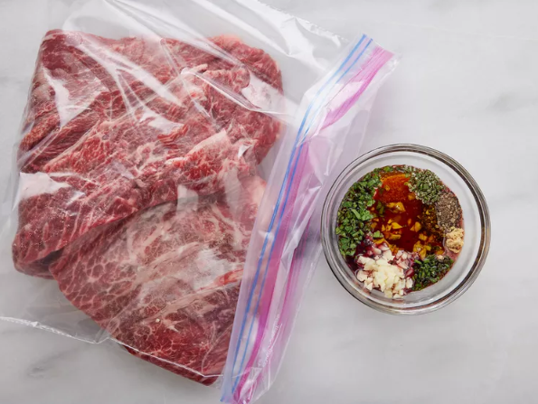
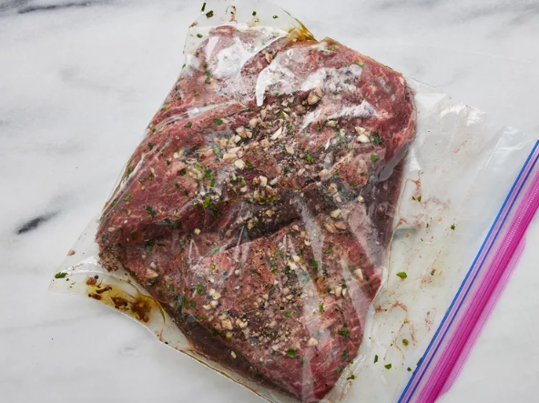
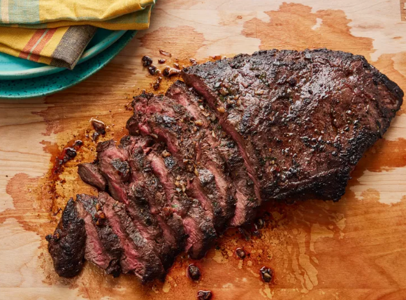

Step 1
Place steak inside a large resealable bag. Stir olive oil, garlic, parsley, rosemary, chives, red wine, salt, pepper, and mustard powder together in a small bowl.

Step 2
Pour marinade over steak in the bag. Press out as much air as you can and seal the bag. Marinate in the refrigerator for 2 to 3 hours.

Step 3
Heat a nonstick skillet over medium-high heat. Place steak in the hot skillet and discard any remaining marinade; sear and cook steak for 3 to 4 minutes on each side for medium rare, or to your desired degree of doneness. An instant-read thermometer inserted into the center should read 130 degrees F (54 degrees C) for medium rare.

Step 4
Allow steak to rest for about 5 minutes before serving.
